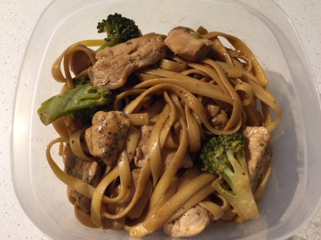

A Classic Stir-Fry with an Asian Twist
Broccoli Stir-Fry (⏰: 30-90 minutes)
← Back to Recipe Index 🍽

Ingredients:
- 2 Chicken Breasts
- 1 1/4 Cups of Kraft Asian Sesame Dressing
- 5 Tbsp of Soy Sauce
- 1/4 Tsp of Garlic Powder
- 1 Tsp Ground Ginger
- 1 Box (375g) Fettuccini Noodles
- 1 Large Crown of Broccoli
Preparation:
- Wash and Cut Broccoli into Florets
Directions:
- Cut chicken breasts into small pieces and add to a pan. Add pepper if desired. Cook chicken on medium heat until it is no longer pink. (10-15 minutes)
- Meanwhile in a bowl add dressing, soy sauce, and spices. Whisk until homogeneous.
- Once chicken is cooked, add sauce and turn heat down to low. Simmer for up to an hour, stirring occasionally.
- Cook fettuccini noodles according to package directions. When fettuccini is 2-3 minutes from fully cooked, add broccoli to the noodles and stir.
- Add chicken and sauce to noodles and broccoli and mix.
- Enjoy!
← Back to Recipe Index 🍽